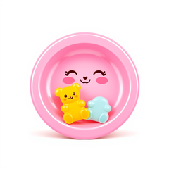

CandyStarter
Starter skeleton for SugarCraft apps

composer create-project sugarcraft/candy-starter my-app --stability=dev — start from the template and you've got a working app. Demo Counter Model, PHPUnit wired up, bin/start entry point.
Install
composer create-project sugarcraft/candy-starter my-app --stability=devPackagist carries only dev-master today, so create-project needs --stability=dev (or pinning the package as sugarcraft/candy-starter:"@dev") until a candy-starter/* release tag exists.
This package is type: project — composer create-project is the only install verb that works the way you mean it to. Composer does not refuse a composer require of a project-type package — it is simply the wrong tool: the skeleton would land in vendor/ and merge its App\ autoload map into your host app.
Quickstart
composer create-project sugarcraft/candy-starter my-app --stability=dev
cd my-app
./bin/start
# Replace src/Counter.php with your own Model — and its matrix in tests/CounterTest.php too.my-app/
├── composer.json # type: project — requires sugar-core + sugar-style
├── phpunit.xml # failOnWarning gate
├── LICENSE # MIT
├── README.md # the walkthrough this page mirrors
├── CALIBER_LEARNINGS.md # template gotchas for AI-agent config sync
├── .gitignore # vendor/, composer.lock, phpunit caches, *.gif except !.vhs/start.gif
├── .assets/icon.png # icon for the docs site
├── bin/start # entry point — constructs Program with the Counter model, stopSignal() exit tail (128+N)
├── src/
│ └── Counter.php # demo Model: up/down/quit, styled border
├── tests/
│ ├── BinStartExitTailTest.php # pins the bin's stopSignal() exit tail (128+N)
│ ├── CounterTest.php # pinned behavior matrix — the test-shape reference
│ ├── ModelContractDocumentationTest.php # README fence vs interface drift guard
│ ├── ReadmeSnippetsTest.php # lint+execute every README php fence
│ └── SiteBodyTruthTest.php # docs site body matches the README's claims
└── .vhs/
├── start.tape # CI gif recording of the running app
└── start.gif # the rendered demo (un-ignored by !.vhs/start.gif; CI regenerates)What's in the box
composer create-project sugarcraft/candy-starter my-app --stability=dev && cd my-app && ./bin/start.src/Counter.php — a minimal Model with up/down/quit and a styled border.tests/. Replace, don't reconfigure.bin/start is autoload + Model + Program::run() + the stopSignal() tail that exits 128+N on signals.sugarcraft/sugar-core (its Lang::t()), sugar-forms, sugar-markdown, sugar-charts, sugar-style and sugar-ssh-server — six packages you're likely to reach for next — and flags which of them are not plain renderers.Source & demos
- Source on GitHub
- Full README
- Originally inspired by bubbletea-app-template (Go); SugarCraft is developed as a native PHP project.
API
| Class | Method | Description |
|---|---|---|
| Counter | __construct(n = 0) | Creates the demo Model — its single state is the readonly count $n |
| Counter | init() | Optional startup Cmd (null = none) — required method |
| Counter | update(msg) | Handle input message — returns [next Model, optional Cmd] |
| Counter | view() | Render the current frame |
| Counter | subscriptions() | Live Msg sources (null = none) — required method |
| Program (sugar-core) | run() | Start the app — provided by the sugar-core dependency, not shipped by the starter |
| Program (sugar-core) | send(msg) | Inject a Msg into a running loop — out-of-band ingress, beside the Cmd::promise() resolution and subscriptions() paths that reach update() (see the README's "Getting Msgs in") |
Demos.
A VHS-recorded GIF of the demo app as it runs from the skeleton. Regenerated automatically on every push that touches the source.